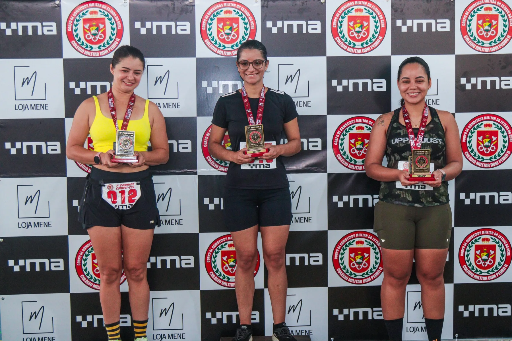
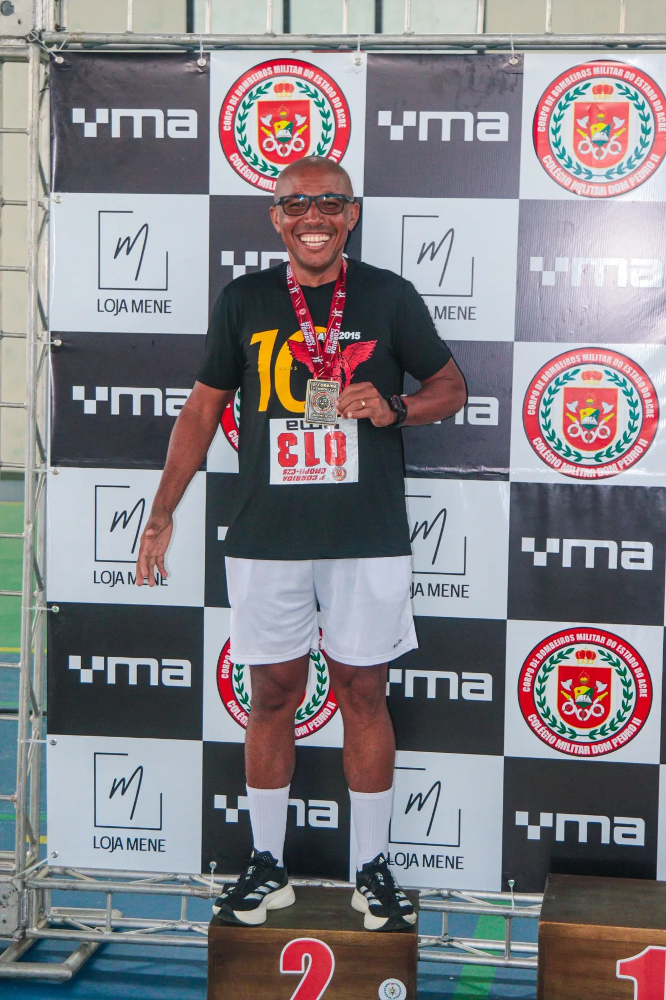

Importante: as fotografias abaixo são memórias da edição anterior. O ranking e os tempos desta página são alimentados somente pelos resultados oficiais publicados no CMS.

MEMÓRIA DA 1ª EDIÇÃO
Pódio feminino
MEMÓRIA DA 1ª EDIÇÃO
Superação e conquista
MEDALHAS E CONQUISTAS
Esforço que fica na memória| Geral | Nº | Participante | Categoria | Tempo | Col. categoria | Status |
|---|